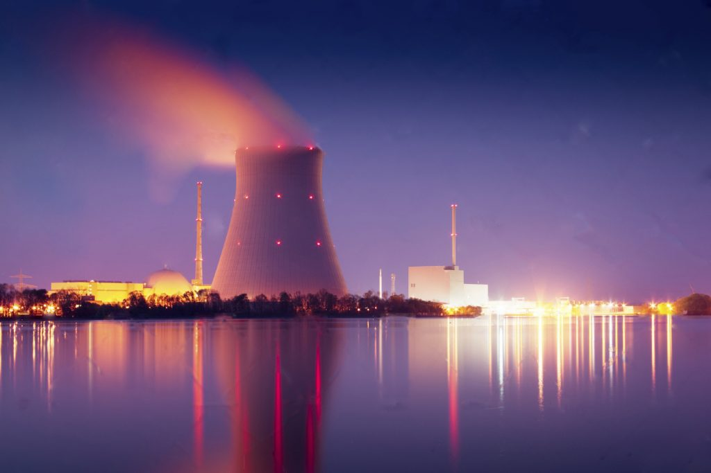
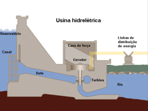

As fontes não renováveis de energia são aquelas que se utilizam de recursos naturais esgotáveis, ou seja, que terão um fim, seja em um futuro próximo, seja em um período de médio ou longo prazo. Em alguns casos, esse tipo de energia costuma apresentar problemas de ordem ambiental, além de disputas envolvendo a extração e comercialização de suas matérias-primas.
Os principais exemplos de fontes de energia não renováveis são os combustíveis fósseis (petróleo, carvão mineral, gás natural e xisto betuminoso) e os combustíveis nucleares. A seguir, você pode conferir um resumo de cada um desses tipos citados.
Usinas termelétricas produzem energia a partir da queima de carvão, óleo combustível e gás natural em uma caldeira, ou pela fissão de material radioativo (como o urânio).
Pouco mais de 60% da energia do mundo é produzida neste tipo de usina que, por aquecer água de rios ou mares para o resfriamento de turbinas e água, além de eliminar dióxido de carbono, gera impactos ambientais consideráveis.
.jpeg)
A energia termelétrica no Brasil é produzida a partir de uma instalação industrial (usina termelétrica) usada para geração de energia elétrica a partir da energia liberada por qualquer produto que possa gerar calor, como bagaço de diversos tipos de plantas, restos de madeira, óleo combustível, óleo diesel, gás natural, urânio enriquecido e carvão natural.
Assim como na energia hidrelétrica, em que um gerador, impulsionado pela água, gira, transformando a energia potencial em energia elétrica, nas termelétricas a fonte de calor aquece uma caldeira com água, gerando vapor d'água em alta pressão, e o vapor move as pás da turbina do gerador.
No ano de 2018, a potência instalada de geração de energia elétrica no Brasil ficou assim dividida: hidrelétrica, 60,33 %; termelétrica, 26,21%; eólica, 7,91%; nuclear, 1,26%; e solar, 0,71%.
A usinas termelétricas foram responsáveis por 22% da energia elétrica gerada no ano de 2017 no Brasil. A fonte hidráulica foi responsável por 70,6% do total e as eólicas responderam por 7,3%.
Em 2018, havia 3.004 empreendimentos gerando energia através de termelétricas, com potência instalada de 43.529.113 KW. Outros 28 encontravam-se em construção, que acrescentarão mais 3,73 GW.
Em 2017, os maiores produtores de energia termelétrica no Brasil foram: Rio de Janeiro, São Paulo, Ceará, Maranhão, Pernambuco, Mato Grosso do Sul e Espirito Santo.
Em 2016, as 70 maiores usinas, com potência igual ou superior a 100 MW, estavam localizadas em vários estados brasileiros, sendo a maioria situada nos estados do Rio de janeiro (8 usinas – 5.390MW); Bahia (8 usinas – 1.409MW); Maranhão (6 usinas – 1.543MW); São Paulo (6 usinas – 1.409MW) e Pernambuco (5 usinas – 1.394MW).

Basicamente, nas termelétricas, a caldeira é aquecida com água e produz vapor, o qual, em alta pressão, move as pás da turbina do gerador. A energia nuclear, por meio de reações nucleares, também é uma fonte de calor para aquecer a água. Por sua vez, após ter movimentado as turbinas, o vapor é conduzido a um condensador que será resfriado para ser reutilizada em um novo ciclo.
Na realidade, a eletricidade é produzida a partir da energia cinética obtida pela passagem do vapor pela turbina, transformando a potência mecânica em potência elétrica.
A energia gerada é transmitida através de cabos, que por sua vez é levada aos transformadores, onde tem sua tensão levada a níveis adequados para utilização pelos consumidores Daí, a energia é distribuída para consumo.
Para saber mais clique aqui
Provém da fissão nuclear do Urânio, do Plutonio ou do Tório, e até da fusão nuclear do Hidrogênio. É liberada dos núcleos atômicos.
A fissão ou fusão nuclear são as fontes primarias que resultam na energia Térmica, Mecânica e das Radiações.
Para saber mais clique aquiA energia nuclear também é um recurso energético utilizado no país. O seu uso foi idealizado no início da década de 1960 e implantado a partir de 1969, com a criação do Programa Nuclear Brasileiro, sob a argumentação de que a energia hidroelétrica, por si só, não seria suficiente para conduzir a matriz energética do Brasil.
Tal argumento se mostrou falso primeiramente pela descoberta da real capacidade hidráulica do país (a terceira maior do mundo) e, em segundo lugar, pela descoberta posterior de novas formas de produção de energia, como os biocombustíveis.
Em 1981, foi inaugurada a primeira Usina Nuclear brasileira, localizada na cidade de Angra dos Reis e, por isso, denominada de Angra
I. Porém, por problemas técnicos, ela foi desativada e, atualmente, não se encontra em operação.
Posteriormente, em um acordo com a Alemanha, foram iniciados os projetos de Angra II e III, que deveriam entrar em funcionamento na década de 1980.Entretanto, a usina de Angra II começou a operar em 2000 e Angra III até hoje não foi concluída.
Além dos altos gastos e do baixo nível produtivo (apenas 3% da produção nacional de eletricidade), as usinas nucleares de Angra são duramente criticadas por grupos ambientais em razão dos altos riscos em casos de acidentes ou vazamentos e pelo não estabelecimento de um local fixo para a destinação dos resíduos radioativos gerados pela usina.
clique aqui para saber mais
Antes de entendermos o que a energia nuclear e como ela é gerada, vamos voltar a um conceito muito importante: reação nuclear. Nada mais é do que uma reação que
envolve a modificação dos núcleos dos átomos, devido à união entre átomos (fusão) ou fissão (quebra) do núcleo, que geralmente se deve ao fato deste ser atingido
por um nêutron. Nesses processos, ocorre a transformação de massa em energia (princípio conservativo observado por Einstein).
Essas reações ocorrem no interior de uma câmara hermética (totalmente vedada) de resfriamento conhecida como reator nuclear, que apresenta a função de resfriamento
(devido às altas temperaturas geradas pelas reações) e de blindagem contra a radiação.
Existem dois tipos de reatores, que são adaptados a cada um dos tipos de reação nuclear: reatores de fusão e reatores de fissão. Atualmente, o único processo
utilizado é o de fissão nuclear, devido a questões técnicas e econômicas. O material mais utilizado para a produção de energia nuclear é o urânio, especificamente o urânio-235 (um isótopo). Na natureza ele é encontrado na forma de
dióxido de urânio UO2, mas apenas 0,711% desse composto apresenta o 235U, que é obtido através de um processo de separação de isótopos (“enriquecimento”). Mas
por que não utilizar outro isótopo? Porque esse é o único, em quantidades significativas, considerado fissil, ou seja, capaz de sustentar uma reação em cadeia
de fissão nuclear. Tudo começa com o processo de mineração, em reservas subterrâneas ou em a céu aberto. Após ser extraído o minério, ele é compactado e concentrado em uma forma
chamada yellowcake ou urania. Em seguida, é processado e convertido em hexafluoreto de urânio UF , que é enriquecido através de diversas técnicas (difusão gasosa
e ultracentrifugação por exemplo). O processo de enriquecimento nada mais é do que a separação do isótopo fissil (235U) do não fissil (238U, o mais comum na
natureza), para que assim, a concentração de combustível seja maior, que antes era de 0,7% para 3% a 5%. Pode parecer pouco, mas esse urânio será utilizado por
cerca de 6 anos (3 ciclos operacionais), mas essa é a ideia, pois desejamos que a fissão ocorra lentamente, de forma controlada. Para outras aplicações, normalmente
militares, a concentração deve ser maior, cerca de 20% para mover um submarino e 95% para uma bomba atômica. Após o enriquecimento, são feitos bastões desse urânio
no formato específico para o reator em questão.
Após esses 6 anos, o urânio é depositado em uma espécie de piscina (spent fuel pools). A água resfria o material e funciona como uma blindagem contra a radiação.
Após pelo menos 5 anos em uma dessas piscinas, o urânio pode ser armazenado seco ou ser reprocessado, o que pode recuperar até 95% do material gasto.
Todo esse processo é necessário para reatores de fissão de “água leve” (light water reactors), ou seja, que utilizam água comum (por exemplo de água pressurizada,
PWR – pressurized water reactor, utilizado em Angra, ou água fervente, BWR – boiling water reactor). Através do bombardeamento de nêutrons, ele sofre o processo de fissão, produzindo outros elementos e, o mais importante, energia
Essa energia é liberada na forma de calor (reação exotérmica). A partir desse ponto o processo se torna próximo de outras formas de geração de energia, como as
termelétricas. Esse calor será o responsável por ferver a água depositada em uma caldeira, gerando vapor que, por sua vez movimenta uma turbina conectada a um
gerador. Existem outros tipos de reatores de fissão, um deles é o chamado reator reprodutor rápido (FBS – Fast Breeder Reactor). A reação que ocorre é um pouco diferente,
pois ele pode ser utilizado para a geração de material físsil, como é o caso do 238U, abundante na natureza em relação ao urânio-235, gerando plutônio, que pode
ser reaproveitado. Mas a fusão nuclear não foi esquecida. Existem algumas iniciativas em fase de experimentação em torno dessa tecnologia. Uma delas é o chamado ITER (Reator
Termonuclear Experimental Internacional), um projeto de parceria entre China, União Europeia, Índia, Japão, Coreia do Sul, Rússia e EUA, patrocinado pelo IAEA
(Agência Internacional de Energia Atômica). O ITER consiste em uma usina de fusão nuclear que está sendo construída na França e utilizará hidrogênio como
combustível, chegando a temperaturas de 100 milhões de ºC e produzindo 500 MW de energia. O início das operações com deutério e trítio (isótopos do hidrogênio)
está previsto para 2035 apenas.
Quando proveniente de barragens, esse tipo de usina é determinado como Usina com
Reservatório de Acumulação. Quando as barragens não param o curso natural da
água, mas a obriga a passar pelas turbinas, são Usinas a Fio de Água.
.
A energia hidroelétrica é a principal fonte de energia utilizada para produzir eletricidade no país. Atualmente, 90% da energia elétrica consumida no país
advém de usinas hidrelétricas. Apesar disso, o país só utiliza 25% do seu potencial hidráulico. Além do mais, o Brasil ainda importa parte da energia hidroelétrica,
uma porção dessas importações é referente à propriedade paraguaia da Usina Binacional de Itaipu, outra parte se refere à compra de eletricidade produzida pelas
usinas de Garabi e Yaciretá, na Argentina.
Emergia Hidrelétrica
No Brasil
Segue abaixo a lista das principais hidrelétricas do país:
1. Usina Hidrelétrica de Itaipu, no Rio Paraná - Capacidade: 14.000 MW;
2. Usina Hidrelétrica de Tucuruí, Rio Tocantins - Capacidade: 8.370 MW;
3. Usina Hidrelétrica de Ilha Solteira, no Rio Paraná - Capacidade: 3.444 MW;
4. Usina Hidrelétrica de Xingó, no Rio São Francisco - Capacidade: 3.162 MW;
5. Usina Hidrelétrica de Foz Do Areia, no Rio Iguaçu - Capacidade: 2.511 MW;
6. Usina Hidrelétrica de Paulo Afonso, no Rio São Francisco - Capacidade: 2.462 MW;
7. Usina Hidrelétrica de Itumbiara, no Rio Paranaíba - Capacidade: 2.082 MW
8. Usina Hidrelétrica de Teles Pires, no Rio Teles Pires - Capacidade: 1.820 MW;
9. Usina Hidrelétrica de São Simão, no Rio Paranaíba - Capacidade: 1.710 MW;
10. Usina Hidrelétrica de Jupiá, no Rio Paraná - Capacidade: 1.551 MW.
 As hidrelétricas funcionam por meio de grandes turbinas que giram devido à força das águas. A água passa por tubos que são interligados às turbinas, fazendo-as girar.
Cada turbina é acoplada a um equipamento chamado gerador, formando, assim, a unidade geradora que faz a transformação da energia mecânica, do movimento das pás da turbina, em energia elétrica. As Usinas de Aimorés e Funil possuem um sistema de reservatório chamado fio d’água. O fluxo de água do rio, ou seja, sua vazão, determina a quantidade de energia gerada.
O volume de chuvas tem impacto direto na geração de energia nas usinas hidrelétricas, aumentando sua produção. Toda a água que chega pelo rio é utilizada para a geração, por isso não há acumulo nos períodos de cheia, nem desperdício.
Este tipo de hidrelétrica tem como vantagem a redução de áreas alagadas e, por consequência, maior preservação das áreas de entorno do reservatório e a proteção da fauna e da flora.
Saiba mais clicando aqui